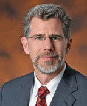
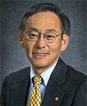
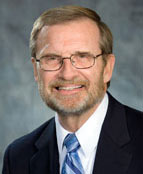
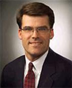
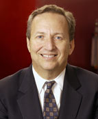
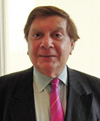

|
| Plenary Session |
| Welcome — Richard Newell, Administrator, Energy Information Administration |
| Keynote Address — Dr. Steven Chu, Secretary of Energy |
| Keynote Address — Dr. Philip Sharp, President, Resources for the Future |
| Keynote Address — Steve Bolze, President & CEO, Power & Water, GE Energy Infrastructure |
| Luncheon Speaker — Dr. Lawrence H. Summers, Director of the National Economic Council; Introduction by David Jhirad, SAIS |
| |
| |
Welcome Remarks, Keynote Addresses, Luncheon Speaker, and Introductions |
|  |
Dr. Richard G. Newell was sworn in on August 3, 2009 as the seventh Administrator of the U.S. Energy Information Administration.
Dr. Newell is on leave from his position as the Gendell Associate Professor of Energy and Environmental Economics at Duke University’s Nicholas School of the Environment. Previously he served as the Senior Economist for energy and environment on the President’s Council of Economic Advisers. He also spent many years as a Senior Fellow at Resources for the Future (RFF), an independent, non-partisan environmental and resource economics research institution in Washington, DC. He has published widely on the economics of markets and policies for energy, the environment, and related technologies, particularly alternatives for reducing greenhouse gas emissions and achieving other energy and environmental goals.
Prior to his confirmation, Dr. Newell was a Research Associate of the National Bureau of Economic Research, a University Fellow of RFF, and on several boards including the Journal of Environmental Economics and Management, the journal Energy Economics, the Association of Environmental and Resource Economists, and the Automotive X-Prize. He has served on several National Academy of Sciences expert committees related to energy, environment, and innovation.
Dr. Newell holds a Ph.D. from Harvard University in environmental and resource economics. He also holds a Master in Public Affairs (M.P.A.) from Princeton University’s Woodrow Wilson School of Public and International Affairs, and a B.S. in materials engineering and a B.A. in philosophy from Rutgers University. |
|  |
Meeting the Energy and Climate Challenge pdf 
Dr. Steven Chu, distinguished scientist and co-winner of the Nobel Prize for Physics (1997), was appointed by President Obama as the 12th Secretary of Energy and sworn into office on January 21, 2009.
Dr. Chu has devoted his recent scientific career to the search for new solutions to our energy challenges and stopping global climate change — a mission he continues with even greater urgency as Secretary of Energy. He is charged with helping implement President Obama’s ambitious agenda to invest in alternative and renewable energy, end our addiction to foreign oil, address the global climate crisis and create millions of new jobs.
Prior to his appointment, Dr. Chu was director of DOE’s Lawrence Berkeley National Lab, and professor of Physics and Molecular and Cell Biology at the University of California. He successfully applied the techniques he developed in atomic physics to molecular biology, and since 2004, motivated by his deep interest in climate change, he has recently led the Lawrence Berkeley National Lab in pursuit of new alternative and renewable energies. Previously, he held positions at Stanford University and AT&T Bell Laboratories.
Professor Chu’s research in atomic physics, quantum electronics, polymer and biophysics includes tests of fundamental theories in physics, the development of methods to laser cool and trap atoms, atom interferometry, and the manipulation and study of polymers and biological systems at the single molecule level. While at Stanford, he helped start Bio-X, a multi-disciplinary initiative that brings together the physical and biological sciences with engineering and medicine.
Secretary Chu is a member of the National Academy of Sciences, the American Philosophical Society, the Chinese Academy of Sciences, Academica Sinica, the Korean Academy of Sciences and Technology and numerous other civic and professional organizations.
In announcing Dr. Chu’s selection on December 15, 2008, President Obama said, “the future of our economy and national security is inextricably linked to one challenge: energy… Steven has blazed new trails as a scientist, teacher, and administrator, and has recently led the Berkeley National Laboratory in pursuit of new alternative and renewable energies. He is uniquely suited to be our next Secretary of Energy as we make this pursuit a guiding purpose of the Department of Energy, as well as a national mission.”
He received an A.B. degree in mathematics, a B.S. degree in physics from the University of Rochester, a Ph.D. in physics from the University of California, Berkeley as well as honorary degrees from 10 universities. Chu was born in Saint Louis, Missouri on February 28, 1948. He is married to Dr. Jean Chu, who holds a D.Phil. in Physics from Oxford and has served as chief of staff to two Stanford University presidents as well as Dean of Admissions. Secretary Chu has two grown sons, Geoffrey and Michael, by a previous marriage. |
|  |
Dr. Philip Sharp became President of Resources for the Future (RFF) on September 1, 2005. His career in public service includes ten terms as a member of the U.S. House of Representatives from Indiana. He serves on the National Academy of Sciences Committee on America's Climate Choices.
Dr. Sharp leads a research and administrative staff at RFF of more than 80 and oversees an institutional endowment of nearly $70 million.
Prior to his service in Congress from 1975 to 1995, Dr. Sharp taught political science at Ball State University from 1969 to 1974. Following his decision not to seek an eleventh consecutive term in the House, Dr. Sharp joined Harvard's Kennedy School, where he was a Lecturer in Public Policy from 1995 to 2001. He also served as Director of Harvard's Institute of Politics.
Dr. Sharp was Congressional chair of the National Commission on Energy Policy. The commission issued its findings in a major report, Ending the Energy Stalemate: A Bipartisan Strategy to Meet America's Energy Challenges, in December 2004.
During his 20-year congressional tenure, Dr. Sharp took key leadership roles in the development of landmark energy legislation. He was a driving force behind the Energy Policy Act of 1992. He also helped to develop a critical part of the 1990 Clean Air Act Amendments, providing for a market-based emissions allowance trading system. Dr.
Sharp is co-chair of the Energy Board of the Keystone Center and serves on the Board of Directors of the Duke Energy Corporation and the Energy Foundation.
After a year at DePauw University, Dr. Sharp transferred to Georgetown University's School of Foreign Service, where he graduated cum laude in 1964. He spent the summer of 1966 at Oxford University and received his Ph.D. in government from Georgetown in 1974. |
|  |
Steve Bolze was named President and CEO, Power and Water, for GE Energy Infrastructure in 2008. The business is a world-leading provider of traditional and renewable power generation technology, as well as Water and Process Technologies. Products and services cover gas, steam, wind, nuclear, aero-derivative turbines, solar electric products, gas-fueled reciprocating engine generators, turnkey power plant services, gasification technologies, Integrated Gasification Combined Cycle (IGCC) systems, desalination, water purification on treatment equipment & chemicals, and industrial water applications.
Headquartered in Schenectady, NY; the business serves customers in over 100 countries with a network of global sales, service and manufacturing centers.
Mr. Bolze began his GE career in 1993 as the Manager of Mergers and Acquisitions for GE Corporate Business Development. In 1995, he joined GE Energy in Schenectady as the Manager of Competitive Strategies and later became the Product Line Leader for large steam turbines. In 2002, Mr. Bolze moved to GE Healthcare as the General Manager for Functional and Molecular Imaging. In 2003, he was appointed a Company Officer and became Vice President, Amersham Integration based in London. He served as the President and CEO of GE Healthcare International based in Paris, France. In 2005, Mr. Bolze was named as Vice President for Power Generation for GE Energy.
Mr. Bolze holds a B.S. degree in electrical engineering from Duke University and an M.B.A. from the University of Michigan. He is also a member of the GE Corporate Executive Council.
|
|  |
Lawrence H. Summers is the Director of the National Economic Council and was appointed by President Barack Obama on November 24, 2008.
Until January 2009, Dr. Summers was the Charles W. Eliot University Professor at Harvard University. He served as the 27th president of Harvard University from July 2001 until June 2006. From 1999 to 2001, Dr. Summers served as the 71st United States Secretary of the Treasury following his earlier service as Deputy and Under Secretary of the Treasury and as Chief Economist of the World Bank. He has taught economics at Harvard University and the Massachusetts Institute of Technology (MIT). His research contributions were recognized when he received the John Bates Clark Medal, given every two years to the outstanding American economist under the age of 40, and when he was the first social scientist to receive the National Science Foundation’s Alan T. Waterman Award for outstanding scientific achievement. He is a member of the National Academy of Science and has written extensively on economic analysis and policy publishing over 150 articles in professional economic journals.
Dr. Summers received his B.S. from MIT and his Ph.D. in economics from Harvard. He and his wife Elisa New, a professor of English at Harvard, have six children. |
|  |
Dr. David John Jhirad is SAIS’s new Professor and Director of the Energy, Resources and Environment (ERE) Program, effective July 1, 2010.
Dr. Jhirad brings to SAIS nearly four decades of experience in the environment and energy fields, spanning the Federal government, academic and nonprofit arenas.
Most recently, he has served as special adviser on Energy and Climate and vice president of Research and Evaluation at the Rockefeller Foundation in New York, where he has been since 2007. Prior to his tenure at the Rockefeller Foundation, Dr. Jhirad served as vice president for Science and Research at the World Resources Institute.
He spent 15 years in the U.S. government, culminating his Federal service at the U.S. Department of Energy as deputy assistant secretary for International Energy Policy, Trade and Investment and senior adviser to the Secretary of Energy during the Clinton Administration. He has led U.S. bilateral relationships with all major energy producing and consuming nations, and has represented the United States as vice chairman of the Governing Board of the International Energy Agency in Paris and the lead delegate to the Asia-Pacific Economic Cooperation (APEC) Energy Working Group.
Dr. Jhirad has a Ph.D. in applied physics from Harvard University, where he won the Bowdoin Prize for excellence in research, and a B.A. and M.A. in theoretical physics from Cambridge University. |
|
|
|